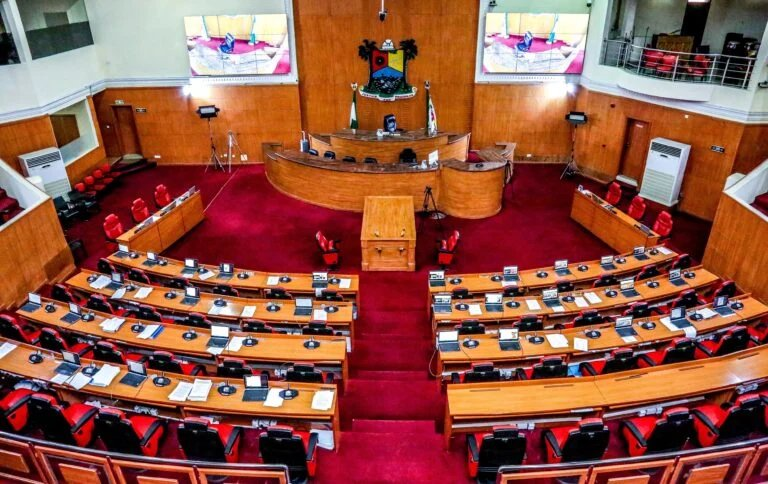
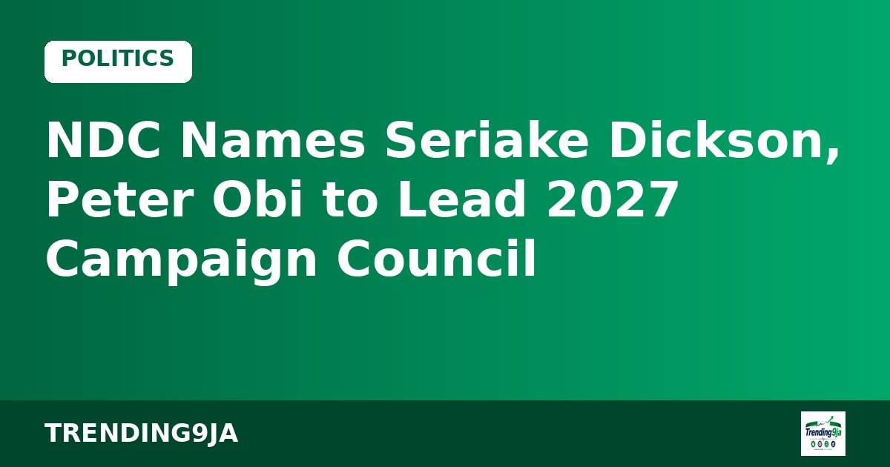
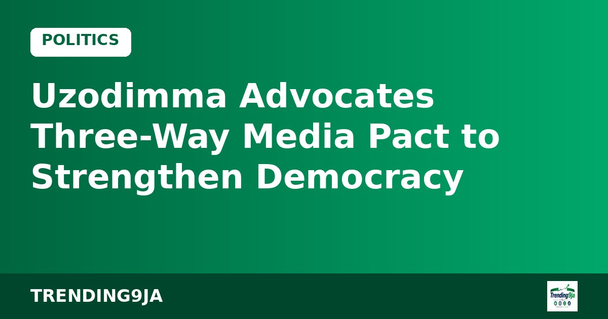
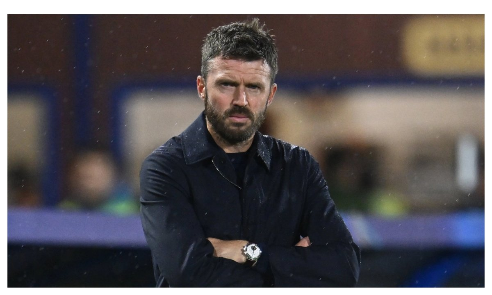
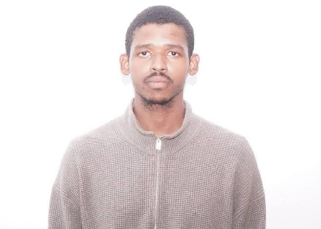
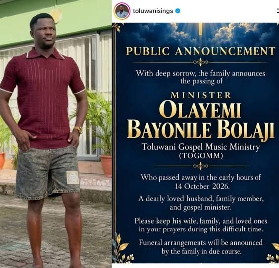

Kuwait Sets Conditions for Foreign Workers Joining Unions
Kuwait has set two strict conditions for foreign workers to join existing labor unions, while maintaining a total ban on expatriates forming new associations.
Everything from the past 7 days, newest first. (181 stories)
Kuwait has set two strict conditions for foreign workers to join existing labor unions, while maintaining a total ban on expatriates forming new associations.
Arsenal manager Mikel Arteta expressed disappointment after his side suffered a shocking League Cup penalty shootout loss to lower-tier Fleetwood.
Thierry Henry has defended his Ballon d'Or interactions with Lamine Yamal, explaining that his questions were light-hearted banter rather than disrespect.

The Lagos State House of Assembly has supported the creation of state police while demanding greater local control and defined roles, according to Punch.
Fourth-tier Fleetwood Town eliminated Arsenal from the Carabao Cup following a 5-3 penalty shoot-out win after a 1-1 draw, according to Vanguard.
The Independent National Electoral Commission will soon release a revised candidate list for the 2027 general elections after completing a review process.
Russian Foreign Minister Sergey Lavrov has rejected claims that Moscow backed demonstrators who waved Russian flags during Nigeria's 2024 #EndBadGovernance protests.
The DSS has taken a man to court in Kaduna for allegedly sharing a forged letter from President Tinubu to the US leader online, according to Bayo Onanuga.
Dr Olusegun Osinkolu, PDP senatorial candidate for Ekiti North, has pledged quality representation and development across the district ahead of the 2027 polls.

The Nigeria Democratic Congress has appointed Senator Seriake Dickson and Peter Obi to head its campaign council for the 2027 presidential election.
Burna Boy presented Arsenal star Bukayo Saka with the Socrates Award at the Ballon d'Or ceremony, celebrating his humanitarian work.
Barcelona winger Lamine Yamal has claimed the 2026 Young Talent of the Year award at the Ballon d’Or ceremony for the third consecutive time, Punch reports.

Rise Networks, INEC, and tech giants have unveiled the #AI4Elections Hackathon to create AI tools for Nigeria's 2027 elections.
The Delta State APC has pledged to focus on issue-driven campaigns and shun violence ahead of the 2027 general elections, according to Punch.
Atiku Abubakar has promised to back Nigeria's video game industry after local browser game Lagos Life attracted $500,000 from angel investors, according to Vanguard.
The Ondo State House of Assembly has passed the constitutional alteration bill to enable the creation of state police, according to Punch.

Governor Hope Uzodimma has proposed a collaboration between government, media, and citizens to deepen Nigeria's democracy, according to Vanguard.
The Obi-Kwankwaso Movement has criticised the Nigeria Democratic Congress over its newly formed campaign council list ahead of the 2027 polls.

Nigeria, Ghana, and Morocco have advanced to the Round of 16 at the 2026 FIFA U-17 Women’s World Cup in Morocco, Vanguard reports.

Manchester United boss Michael Carrick could lose his job if his team fails to secure a victory against Bournemouth on Sunday, according to reports.

A northern youth coalition says the high attendance at a Kaduna rally shows Northern Nigeria supports President Bola Tinubu's 2027 re-election bid.
Julian Alvarez has apologised to Atletico Madrid fans for attempting to force a summer exit, acknowledging his mistake after restoring form with recent goals.

Julian Alvarez scored the winning goal for Atletico Madrid in their 1-0 La Liga victory over Deportivo La Coruna, Vanguard reports.
Brazilian football legend Ronaldinho is coming out of retirement at age 46 to play for Italian third-tier side Ravenna next month, according to Punch.
Tottenham Hotspur recorded a rare 2-0 victory over Chelsea at Stamford Bridge following an own goal and a red card for Cole Palmer, Vanguard reports.
Former Vice President Atiku Abubakar has criticized President Bola Tinubu for blaming opposition parties for the country's economic hardship.
Governor Lucky Aiyedatiwa has warned NYSC members in Ondo State against getting involved in local politics and illegal acts, Vanguard reports.
Gianni Infantino claims strong backing from member associations for his FIFA presidential re-election bid following regional endorsements, according to Vanguard.
Nigerian singer Zlatan Ibile and his partner Davita Lamai have posted traditional wedding photos on Instagram ahead of their ceremony, according to Punch.
Plateau State has organized a training workshop to equip top government officials with Artificial Intelligence skills to boost public service delivery.
Choreographer Kaffy has reflected on her journey from university sports to professional dancing and gaining recognition through a Guinness World Record.
The EFCC has launched its recruitment drive across four main categories, warning applicants that the submission process is entirely free, according to Legit.ng.
George Ilenikhena has scored in consecutive matches for Saudi Arabian side Al-Ittihad, bringing his goal contributions to eleven this season, Punch reports.
FWIFT Nigeria will host its 2026 national convention in Lagos to empower women across film, broadcast, and digital media platforms.
Legal analyst Anyakweh Amadi says President Bola Tinubu's major economic, security, and tax reforms put him in a strong position ahead of the 2027 elections.
MC Alger overturned a first-leg deficit to beat Rangers International 3-0 and qualify for the CAF Champions League group stage 3-2 on aggregate.
Vice President Kashim Shettima met with Fullo security staff at a teaching hospital during an official project commissioning visit to Maiduguri, Borno State.
The Nigerian naira ended the week on a weak note, depreciating against the US dollar in both official and parallel markets despite rising foreign reserves.
Donald Trump's administration has reduced import duties on select Canadian goods following political pressure ahead of US midterm polls, according to Vanguard.

Faith-based film Agbara Nla: The Return becomes the highest-grossing Nollywood title for an October release.

Nigerian skit maker Broda Shaggi shares how a stray bullet hit him while filming in Ogun.

Grammy-winning singer Burna Boy makes Forbes Africa’s special list of the continent’s most influential figures.

FG confirms imported Bundibugyo Ebola case in FCT; 44 contacts identified, no-fly list activated.

Victor Osimhen ends his UCL drought as Galatasaray come from behind to beat Lille 4-2.
2,000+ arrests, Limoges town hall destroyed, Macron addresses nation. Curfews imposed in Paris.
NDC VP says party will not withdraw for ADC/Atiku ahead of 2027.
Dismisses Makinde’s claim that FG is holding dividends until after 2027 elections.
Tinubu and governors mourn the late statesman who passed in Abuja.
Actress announces the death of her mother.
Sanctions for failing to provide adequate security at home games.
Campaign aims to curb infectious diseases through better hygiene practices.
Platform targets 500,000 women, 5,000 health workers and 500 facilities by 2030.
Experts and policymakers discuss practical AI frameworks for Nigerian healthcare.
G100 convener says alliance may name one presidential candidate days before the election to avoid splitting the vote.
APM camp predicts losses in Lagos, Rivers and 10 other states over economic hardship.
President opens peace talks with Osun governor over local government control dispute.
Tenia Abraham Omenogor has been laid to rest after battling a kidney infection.
Week-long offline Afrobeat celebration ends tonight. Femi, Made & Seun Kuti among the live energy.
Nigeria’s under-17 women’s team lose their opening match of the tournament.
Pharmaceuticals, chemicals and unwholesome foods seized at Onne Port destroyed in Port Harcourt.
Plan aims to bring network access to communities currently offline.
Everything reported so far on the second-generation Roadster: the SpaceX-powered flip, the claimed specs, the three versions, legal questions and what analysts say.
DSS, military and police nab suspects linked to the Imo Independence Day abduction; manhunt continues for others.

Faisal Maina handed over to EFCC; court had ordered his extradition if found abroad.

President seeks quick Senate confirmation ahead of 2027 elections.
First governor in the state’s history to succeed himself; ceremony draws Tinubu, Akpabio, Ooni and colleagues.
Singer shares what he witnessed behind closed doors and calls for less political feuding.
Live energy continues at New Afrika Shrine; Femi, Made & Seun Kuti among headliners.
Agency intensifies crackdown on fake drugs, drinks and foods amid public health concerns.
Experts say AI can cut out-of-pocket spending and bridge workforce gaps; GenMRI tech still in focus.
President directs agencies to ensure free, fair 2027 elections and eliminate terrorist hideouts nationwide.
NBS reports further easing; food inflation at 19.59% as FAAC shares ₦2.428trn.
Labour insists negotiations must start immediately; clashes with government over petrol prices and timeline.
Former VP blasts use of surrogates; says account for first term before seeking re-election.

Family confirms death; PA says he was rushed to 7-8 hospitals in Ibadan, some on strike.
Obituary highlights his unique voice and journey from Ikirun to gospel stardom.
Nine players make debuts; Chelle hails response after injury crisis and Bissau loss.
Faith-based remake delivers biggest October opening; Dear Ajayi selected for Oscars.
National figures show Nigeria accounting for nearly 44% of African region cases this year.
Mary-Brenda Akoda’s tech validated; seeks hospital partners for 2027 rollout in Nigeria and UK.
Amupitan clarifies amid NDC claims of rigging plans; QR codes for PVC collection rolling out.
President charges members to secure votes while signalling limited personal campaign role to keep governance on track.
Chairman Amupitan stresses algorithms will not decide winners; deepfakes pose growing threat to credibility.
ADC candidate blasts rising cost of living and insecurity under the current administration.
Minister Tegbe says benefits expected in 2-3 years; nationwide technical audit underway.
Multi-agency team continues underwater search; fears of health risks from unrecovered remains persist.
PDP and others accuse FG of secrecy amid route realignment controversy.
“We’ve learnt from past elections. I give you my word,” says Inspector-General.
Governor Cardoso reaffirms commitment despite recent declines in rate.
Yinka Alakija & Prime Owest Band thrill fans live at New Afrika Shrine, Ikeja. Pure offline Afrobeat energy — Oct 13.
Opposition figures get key state coordinator roles as the ruling party rejigs its presidential campaign structure ahead of inauguration.
The network suspends the political analyst after a Premium Times investigation questioned his academic credentials.

Aliko Dangote says the offer is already oversubscribed as the company opens the door wider for investors across the continent.

Five states account for 88% of cases; agency urges early presentation and better sanitation.

The Starboy is set for Eagle Square on December 13 and the Detty December Fest opening in Lagos on December 18.

Poverty has stabilised for the first time since 2019 and reserves hit $53.8bn, per the presidency's reading of the October update.

A joint military, DSS and police operation freed the 20 abducted corps members; questions remain over a ransom paid during negotiations.

The actress credits Iyabo Ojo for support and describes difficulties in her former marriage.

The twins' dispute with brother Jude Okoye plays out before the Federal High Court in Lagos, with the EFCC case adjourned to December.

Nigeria started seven Premier League players and still lost; Ghana threw bottles, then lost their coach.

Aikou and Sheba finish as runners-up in the "Show Ya Sef" season finale.

Lagos' Deputy Governor claimed 64,000, but Guinness counted only those who stayed from start to finish.

"70% of the people you will give money no go promote you," says the music businessman as fans pile on.

Nearly $175 million in outside ad money, a Democrat leading narrowly in polls and Trump's third Texas trip in under a month.

At the Aloba family's request, the case goes to the Special Enquiry Bureau of the Lagos State Police Command.

The Grammy winner reveals she sometimes denied being Tems when strangers recognised her at airports.

The CDU managed only about 18% as the chancellor's approval slides and the AfD eyes 2029.

One loser blames "factors", one winner pockets N50 million and an electric vehicle, and rematches are already being called.

A London inquest heard that filler material found in his lungs matched the procedure he had on holiday.

Is a street-hop hit welcome in church? The viral video has the timeline arguing.

The Steelers vs Saints game on 25 October gets an African headliner who already sold out the venue.

Survivors describe being "jam-packed in the cell"; the NSCDC commandant has been suspended pending investigation.

The singer explains his break from music as fans react to how he looked on stage.
A N750 billion cash transfer programme, a viral quote and an opposition demanding to know how beneficiaries were picked.
The week's biggest Nollywood headlines in one place.
The wildest football moments off the pitch this week.

PDP, NDC and four Bauchi parties lose candidates as INEC publishes the final list for the 6 February 2027 elections.

Mobile police vehicles surrounded the hall; the convener says no police permission is needed to assemble.

Video shows a supporter bleeding from the head; police have not responded to enquiries.

ABC, CBS, CNN, NBC and Fox are under review after a press-access boycott; press groups call it intimidation.

An FT poll puts disapproval at 59%, and troops near a D.C. ballot drop box raise eyebrows.

An emergency meeting was held on Sunday after police received information about a possible threat.

A warning to Yoruba actors about being greeted by first name sparks a public reply.

Davido's reply on Instagram: "Factos". Felabration 2026 runs 12 to 18 October.

"I should have done this a long time ago, but it's never too late to take accountability," he writes.
The PDP candidate points to "undue pressure" from the APC on INEC and says the party will pursue the matter through "appropriate channels".

The ADC candidate says he has information that a French-based company may handle over half of INEC's sensitive materials. INEC has not responded in the reports seen.
CP Ibrahim Adamu Bakori cites a Sabon Gari arrest two weeks ago and says he wanted details of the roughly 700 expected attendees.
Atiku and Obi question what happens after the 30 days, while the NLC's two-week ultimatum runs to about 23 October.

The man speaking is a Bayelsa monarch, not the ex-militant leader, Legit.ng finds. The post has about 100,000 views.

Nnaji resigned as science minister in October 2025 over certificate allegations and still faces a forgery trial.

Zelenskyy tells ABC "it's up to our people" to pick their leader and says elections are possible after a 60-day total ceasefire.

The campaign cost up to $20m; the administration says it was ending Sunday anyway. Also: a Newsom death-row move and Kansas Senate polling.

Saudi authorities call it the deadliest attack on the kingdom in over a decade; the UN calls strikes on civilian airports "a grave escalation".

Plus thousands demand climate action in Brussels. Short summaries from Euronews's Sunday coverage.

Haaland, Doku and Cherki score; Liverpool fans unfurl a banner reading "a generation of supporters cheated".

A look back at the heroes of Tunisia 1994 who are no longer with us.

Former Al-Nassr player Fahd Al-Hraifi says he would have passed it; Ronaldo is 20 goals short of 1,000.

"Sorry to my team and my fans," he wrote on Instagram. Dressing-room sources say he did not intend to hurt Saliba.

The actress says months of severe pain have limited her movement. No diagnosis has been disclosed.

The clip shows Mahama dancing to the altar with his offering at an Assemblies of God service.

A $78 billion funding gap, Kyiv in darkness and a Black Sea blockade: Brussels is asking the UK, Canada and Japan to step up.

The veteran Yoruba actor's interview comments have the internet talking.
"You borrowed the recipe for feeding a nation and returned with a tasting spoon," the ADC candidate says.

"2027 will mark the end of the politics of lies and deceit," the APM candidate says in Yola.

Up to 3 million tonnes promised, critics call it a sanctions rollback, and some Republicans want it blocked.
Kyiv hits back as a Russian strike on Zaporizhzhia kills 20, including three children.

The 41-year-old captain apologised, saying coach Jorge Jesus "broke his word" over his role against Norway.

The €140m record signing breaks his duck, but Madrid finish with ten men and sit six points behind Barcelona.

"My office. From here to the studio," he captions the Lagos building tour.
A 10-point fuel package, a proposed N1,350 price ceiling, and an opposition calling it a pre-election bribe.

Baby news two months after the white wedding, plus a very public apology from a former AGN president.

The opposition unveils its 2027 campaign council in Abuja, with promises on refining, student debt and local government autonomy.

The ADC candidate rejects the 30-day petrol discount, demands electoral reforms and says there will be no "no-go areas" for his campaign.

CAF's boss calls claims that he takes orders from FIFA or UEFA "nonsense, absolute rubbish."

Obi told the BBC he won in 2023 but has no evidence. The APC campaign called it a "troubling display of delusion".

X is split after the actor disagrees with a sermon that called traditional festivals "dark practices".
A Middle East conflict in its eighth month is behind pump prices, food costs and even cheaper flights disappearing.

From Romania's 6.3% inflation to concerns over French public finances, Europe's economy is under pressure.

One strike averted in under 48 hours, another begins in Abuja over teachers' welfare.

The graduates were seized on the Owerri-Onitsha road; it is unclear whether a ransom was paid.

Iheanacho and Edokpolor also score as Nigeria show character in the friendly in Nizhny Novgorod.

Akor Adams says the squad accepts responsibility for the Guinea-Bissau defeat.

A FIFA presidency challenge and a big new contract at the Emirates.

"At least if you hate me, you won't be too daft not to love my hair," she writes.

He pushes back on the idea that he inherited a feud through his Davido association.

A viral stage moment divides fans over etiquette, with some calling the criticism classism.

The gospel singer's comments set off a heated Yoruba-language video reply and a divided fan base.

Lobbying, counter-lobbying and a crunch double-header: the Eagles' coordinator, media manager and curator roles are reportedly up for change.

The PRP candidate blames "large egos" for the opposition's failure to unite behind one platform.

Marketers fought over rights while his family went hungry, he says.

"I honestly do not understand why criticism has to become curses," the actress says.

Widely reported as a ₦40 billion project, the hub includes studios, a film academy and event spaces.

He calls his 2023 vote "one decision I am honestly ashamed of" and launches #ArewaForAsiwaju.

"Set up your own parallel INEC and situation rooms on election day," Oseni tells viewers.

The rapper urges fans not to make themselves a subject of ridicule online.

A revived 1993 classic, a gritty thriller with a Guinness World Record, and a Jim Iyke psychological drama. Here's your cinema list.

10.7 million new registrations, 57,000 new BVAS machines, and a court orders INEC to recognise the Accord candidate.

The ATR-42 with 25 passengers and seven crew went down in a swamp near the Igbokoda naval base.

Bella accused him of owing her millions; Sheggz says both contributed financially.

The singer says he has discussed a prenup and would go public if a test showed a child wasn't his.
No stories from the past week here yet. Check back soon.